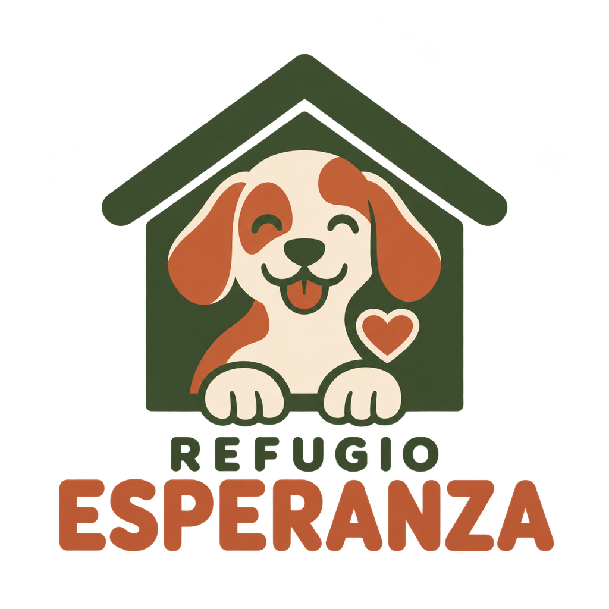

Nuevos ingresos
Durante este mes se registraron 14 animales rescatados.

Sistema de rescate, recuperación y adopción responsable.
Este sistema permite registrar animales rescatados, consultar su proceso de recuperación y conocer los casos que se preparan para una adopción responsable.
Durante este mes se registraron 14 animales rescatados.
5 animales reciben tratamiento y seguimiento médico.
6 animales permanecen en recuperación dentro del refugio.
3 animales están preparados para iniciar su adopción.
Cada animal recibe un registro inicial y una valoración para determinar la atención requerida.
El equipo realiza seguimiento al tratamiento, alimentación y evolución del animal.
Después del alta, se verifica que el animal se encuentre en condiciones adecuadas para la adopción.
La comunidad puede apoyar reportando casos, difundiendo animales disponibles y promoviendo el cuidado responsable.